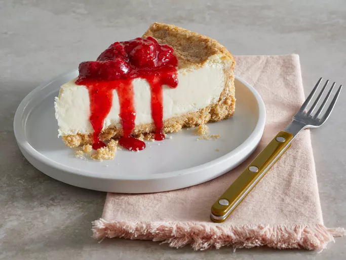

Strawberry Topping

A strawberry topped cheesecake.
Ingredients
- 1 pint fresh strawberries
- 1/3 cup white sugar
- 1 teaspoon vanilla (Optional)
Steps
- Hull strawberries and cut them in half.
-
Combine strawberries, sugar, and vanilla in a saucepan over medium-high
heat. Cook, stirring occasionally, until mixture sizzles and juice
begins to form.
-
Continue stirring; mash a few strawberries with a wooden spoon or
heat-proof spatula to help produce the syrup. Cook until sauce thickens,
about 15 minutes. Remove from the heat.
-
Transfer 1/3 of the strawberry sauce to a blender. Cover and hold the
lid down with a potholder while you puree the mixture.
-
Add pureed mixture back into the remaining sauce and stir until blended.
- Serve over a slice of cheesecake.